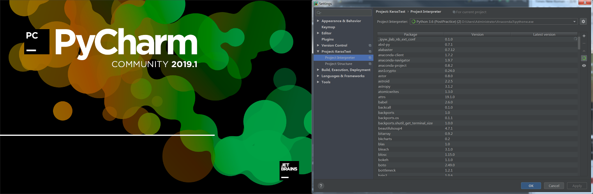
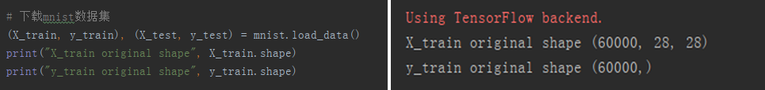
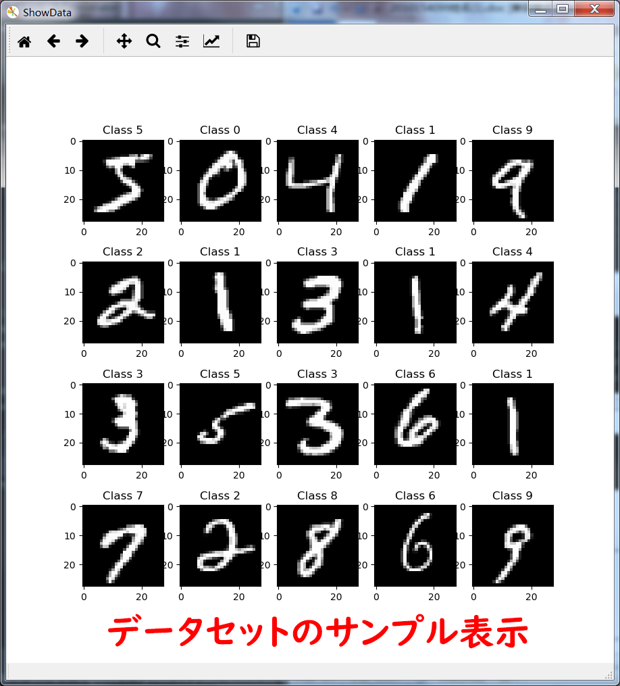
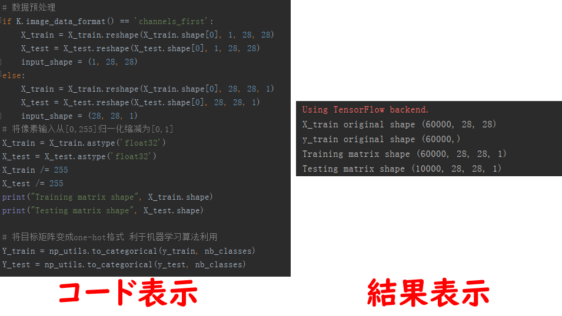
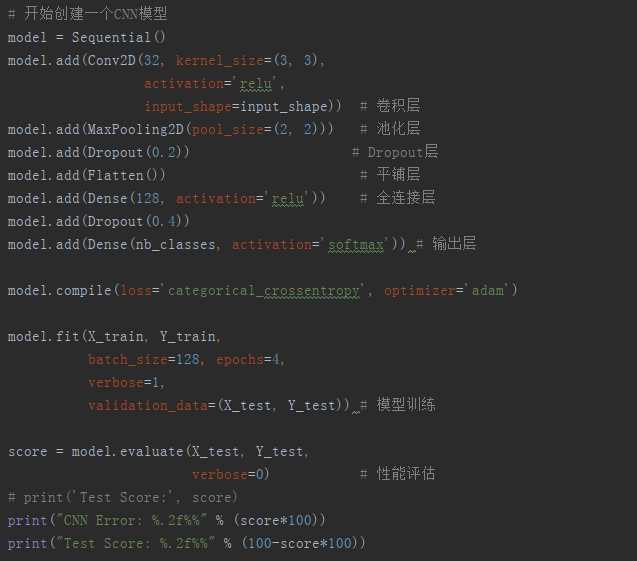
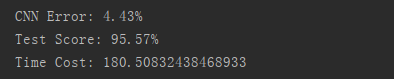
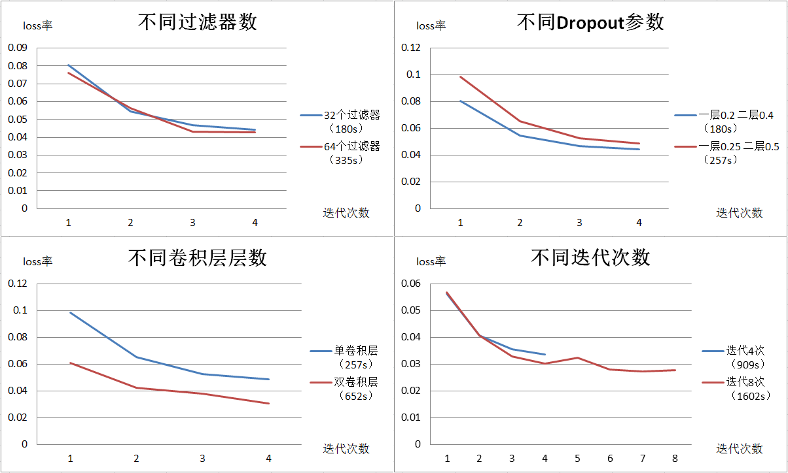
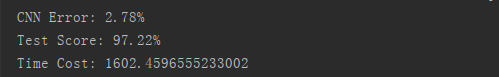
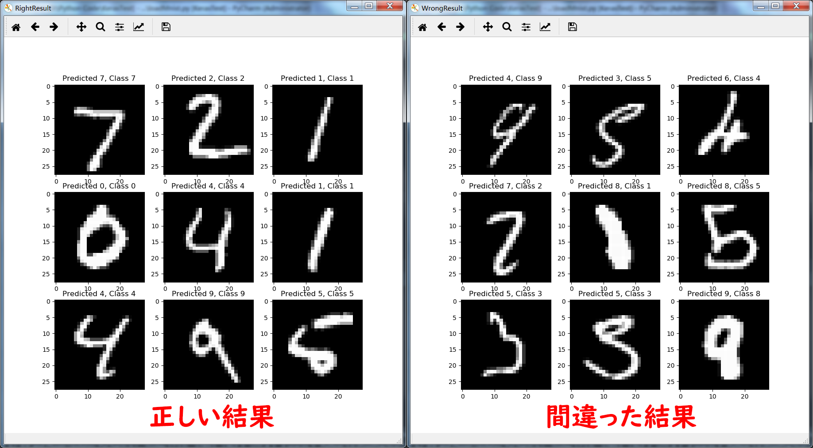

このプロジェクトは、大学で勉強した知識を使って完成した最初のディープラーニング関連プロジェクトである。
1.事前準備
初めてディープラーニング関連の開発作業を行う時、開発環境の整備が必要がある。このプロジェクトでは Phyton 開発領域でよく使われる IDE ーーPyCharm とオープンソースニューラルネットワークライブラリーー Keras を使用することになる。

次に、今回トレーニングで使われるデータセットは手書き数字の画像データセット「MNIST」を選用する。

このデータセットは、手書き数字画像識別領域で非常に有名なデータセットで、「0」～「9」の手書き数字の画像の集合である。 MNIST データは全体 6 万枚の訓練データ用（画像とラベル）と 1 万枚のテストデータ用（画像とラベル）、合わせて合計 7 万枚で構成される。

このプロジェクトは上記の環境で行うこと。
2.データ前処理
畳み込みニューラルネットワークでデータセットを処理することを容易にするため、データセットに対して特定の前処理をする必要がある。データセットで提供されるのはサイズ 28 ∗ 28 のグレースケールイメージであるので、ピクセルを正規化して [0, 225] から [0, 1] へ変換することができる。次、ターゲット行列を One-hot でコード化する。これで畳み込みニューラルネットワークで処理するためのデータ前処理が完了した。このような操作は後でエントロピー計算部分に役をたつ。

3.モデル構築とトレーニング
これで畳み込みニューラルネットワークモデルの構築を開始する。このプロジェクトのモデル非常に簡単な構造で構築したものである。

このニューラルネットワークのテスト結果は次の通りで示している。 10, 000個のテストデータで 95.57%の正解率が得られたことになった。

4.トレーニング結果
ディープラーニング領域で初プロジェクトとして、上記の結果は良いと言えるか、更に勉強するため、ここで様々なパラメーターを変更し結果へ与える影響を考えていきたいと思う。ここで 4 種類のパラメーターを変えて結果について討論していきたいと思う。

• フィルター数：フィルター数を 32 と 64 二つ設定をする。結果より、フィルター数は結果の損失（lose) への影響は殆どないと言える。
• Dropout 層と畳み込み層：畳み込み層の数を増やしながら Dropout 層のパラメーターを適切に減ること。結果より、大幅に減ることができる。
• Iteration 回数：トレーニングの Iteration（繰り返し）回数を調整する。結果より、Iteration 回数を増やすことで損失数を軽減することができるか、ある限界（しきい値）を超えると損失は殆ど変化しないようになる。これによって、トレーニング中で学習率や他のパラメーターを適時に更新して無意味な計算を避け、トレーニング時間を節約することが必要がある。
このような最適化手順で調整することで、認識精度は 95.57%から 97.22%になることができるようになる。

最後、トレーニング結果より部分のサンプルをここで示す。

以上です。